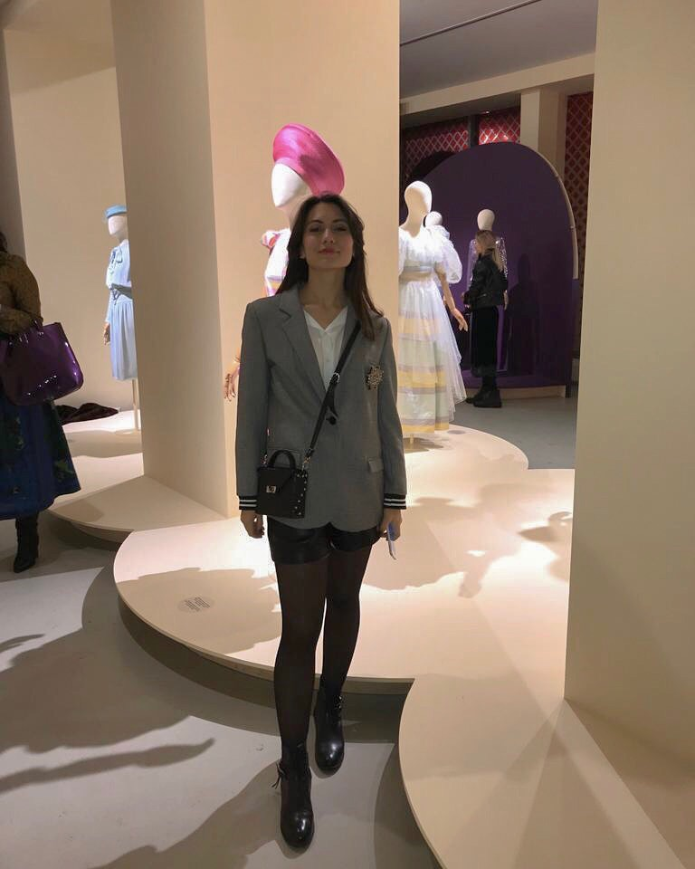
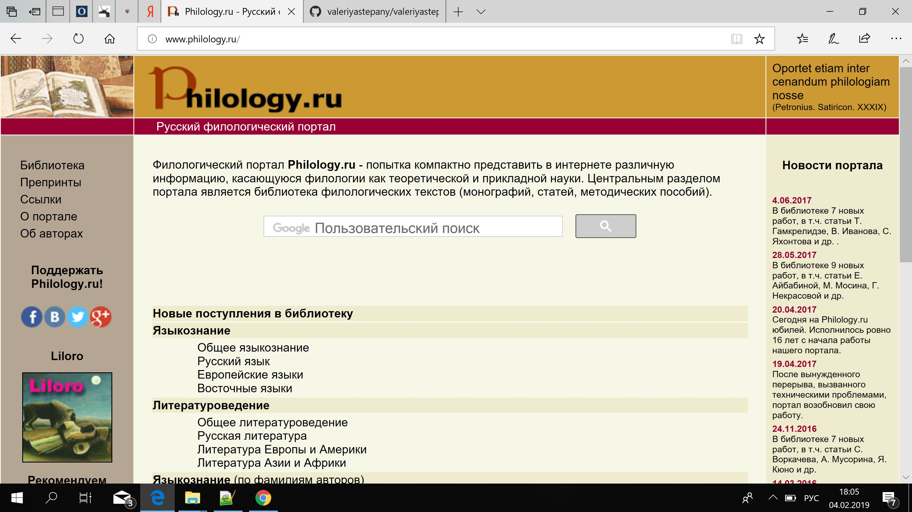

Немного информации обо мне:

Мои данные:
- ФИО: Степаньянц Валерия Артуровна
- Место учебы: НИУ ВШЭ, ОП "Филология"
- Научные интересы: теория и история литературы, всемирная история и политология
- Факты обо мне:
- Ем и не толстею
- Мой любимый актер-Эдриен Броуди
- Обожаю кататься на горных лыжах
- Мечтаю увидеть живого кита в океане
Как современные технологии могут помочь филологу
В 21 веке передача информации осуществляется при помощи цифровых технологий. Написание и публикация статей, создание проектов, поиск работы - все эти, казалось бы, простые действия требуют от филолога взаимодействия с современными технологиями. Они помогают сделать работу проще и быстрее.
Анализ достоинств и недостатков сайта
Филология.ру

Достоинства:
- Легко искать информацию.
- Есть описание. Это дает основное представление, для чего необходимо использовать этот сайт.
Недостатки:
- Жуткий грязно-желтый цвет отвлекает внимание.
- Много лишней информации(новости сайта, ссылки), которые зачастую никому не интересны.